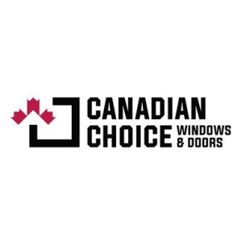

★ Our #1 editorial pick
1. Canadian Choice Windows & Doors
7121 104 Ave SE, Unit 149
4.6 (~1,500)
Google rating 4.6 out of 5 from about 1,500 reviews.
Editorial score 5/5 — our opinion
25-year transferable warranty company-stated
“Four patio-door families (sliding, stacking, bifold and tilt-and-turn) with a stated 25-year transferable warranty.” more
Company claims are not verified — see the full review.
Read full review
Visit website